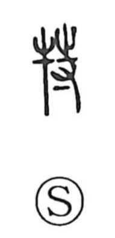

特

Uncategorized
Kun: | On: toku
special ・ particular ・ exceptional ・ only
Explanation
A phono-semantic compound formed with the ox radical 牛 and the phonetic 寺, 特 was explained in the Shuowen as “a big male ox,” evoking the image of a prime, imposing bull. From this sense of a distinguished animal, the word came to describe human excellence: in the Mao tradition of the Book of Odes it is used of a man outstanding among a hundred, hence meanings such as “to excel” and “to be different, set apart.” In later usage it can also substitute for 独 to mean “alone,” which underlies the adverbial sense of “only” and “especially” found in modern Japanese.